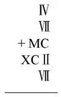
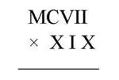
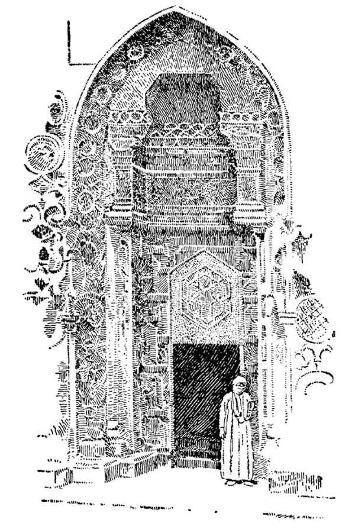
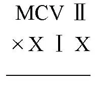

46
PERHAPS
you have read the Arabian Nights
. This is the story of
Arabian Days
阿拉伯时代

In the one hundred years after Muhammad died, the Muslims conquered the Middle East and North Africa. Soon after that, they conquered Persia and lands farther east. Before long, their empire was larger than the Roman Empire had been. For the Middle East and North Africa, the centuries that followed were indeed Arabian Days. Although they failed to conquer most of Europe, over the years people there learned many things from the Muslims.
The Phoenicians invented our alphabet, but the Arabs invented the figures which we use today in arithmetic. 1, 2, 3, 4, and so on are called Arabic figures. The Romans used letters instead of figures: V stood for 5, X for 10, C for 100, M for 1000, and so on. Think how difficult it must have been for a Roman boy to add such numbers as

They could not be added up in columns as we do. When you think of multiplying and dividing with Roman numbers, it seems almost impossible, for example:

Occasionally you may see Roman figures still used—on clock faces, for instance—but all the figures that you use every day in your arithmetic are Arabic figures.
The Arabs built many beautiful buildings; these buildings look quite different from those that the Greeks and Romans and Christians built. The doors and window openings, instead of being square or round, were usually horseshoeshaped. On the top of their mosques they liked to put domes shaped something like an onion, and at the corners they put tall spires or minarets from which the muezzin could call aloud the hour for prayer. They covered the walls of their buildings with beautiful mosaics and designs. The Muslims, however, were very careful that these designs were not copies of anything in nature, for they had a commandment in the Qur'an something like the Christian commandment, “Thou shalt not make… any likeness of anything that is in heaven above, or that is in the earth beneath, or that is in the water under the earth.” Because of this commandment, most Muslims never made drawings or pictures of any living thing, neither of plants nor animals. They thought they would be breaking the commandment if they did. So they made designs out of lines and curves without copying anything from nature. These designs were called arabesques , and although they were not like anything in nature, they were often very beautiful.
Still another thing:
In Arabia there grew a little bush on which were small berries with seeds inside. The sheep seemed to like these berries and, when they ate them, became very lively. The Arabs themselves tried eating the seeds of these berries with the same effect. Then they made a drink out of these seeds by roasting and grinding them and boiling them in water. This was coffee—which the Arabs had discovered and which is now drunk all over the world.
Another drink made from berries, often from grapes, is alcohol. The Muslims did not like what alcohol does to people who drink it, and so they forbade every Muslim from drinking anything containing alcohol, such as wine, beer, or whiskey.
Still another thing:
Woolen cloth which people used for clothing was made from the hair of sheep or goats. As it took the hair of a great many such animals to make a very little cloth, woolen cloth was expensive. The Arabs found out a way of making cloth from a plant, the cotton plant, which of course was much cheaper. Then in order to decorate the cloth and make it pretty and attractive, they stamped the plain cloth with wooden blocks shaped in different forms and dipped in color. This printed cloth that the Arabs invented was called calico .
Still another thing:
The Arabs made swords and knives of such wonderful steel that the blades could be bent double without breaking. The blades were said to be so keen they could cut through the finest hair if floated on water, a thing that only the sharpest razor will do, and yet at the same time so strong that they could cut through a bar of steel. Such swords were made in the East at a place called Damascus, which is in Syria, and in the West at a place called Toledo, which is in Spain; and so these swords and knives were known as Damascus or Toledo blades. Unfortunately, no one now knows the Arabs' secret for making such marvelous blades. It is what is called a lost art.

Muslim veiled woman standing by Saracenic ornamental arch
站在撒拉逊装饰风格的拱门旁戴着面纱的穆斯林妇女
Near where Babylon once was, the Arabs built a city named Baghdad. You have heard of it if you have ever read any of the Arabian Nights , for most of these stories were told about Baghdad. It was the eastern capital of the Muslims. There in Baghdad the Arabs built a great school that was famous for many, many years. At Cordova in Spain was the western capital of the Muslims, and there they built another great school. Later, after Islam spread south of the Sahara Desert to West Africa, Muslims there built another wonderful school in a city called Timbuktu.
I might tell you many other things these people did—how they made clocks with pendulums to keep time—people had no real clocks before; how they started wonderful libraries of books; and so on—but this is enough for the present to show you what intelligent people they were.
The Arabs belong to the Semite family, the same family to which the Phoenicians and Jews belong. The Arabs were as clever as their cousins the Phoenicians, who, you remember, were very clever, but they were also as religious as their other cousins the Jews, who, you remember, were very religious.
The Muslims had ideas about women that are different from ours. Most thought it was immodest for a woman to show her face to men, and so every woman had to wear a thick veil which hid her face—all except her eyes— whenever she went out where there were men. With such a veil she could see but not be seen. Muslims believed their women would be protected by wearing the veil. Muslims also taught that one man might have up to four wives, if he could protect them all and care for them equally.
One other thing that the Muslims did was to copy and save the writings of the Greek poets and philosophers like Aristotle. Many of these were lost in Western Europe after the fall of Rome. You will see later that Muslim scholars saved these writings and gave them back to Europeans to study centuries later.
【中文阅读】
你大概读过《一千零一夜》。下面的故事是
阿拉伯时代
穆罕默德死后一百年间，穆斯林征服了中东和北非地区。此后不久，他们又征服了波斯和东边更远的地方。不久，他们的帝国就比以前的罗马帝国还庞大了。就中东和北非来说，这以后的几百年的确是阿拉伯的鼎盛时期。尽管穆斯林没能征服欧洲的大部分地区，可是多年来，欧洲人也从穆斯林那里学到了很多东西。
腓尼基人发明了我们文字的字母表，而阿拉伯人则发明了我们现在算数上用的数目字。1，2，3，4，等等，叫做阿拉伯数字。罗马人使用字母而不是数字：字母 V代表5，X代表10，C代表100，M代表1000，等等。你想想一个罗马孩子要把以下这些数目加起来该有多难：
我们不能像使用阿拉伯数字那样把这些数目排成纵行来相加。你要想用罗马数字做乘法或除法，那就几乎不可能了，比如说：

你偶尔可能会看到罗马数字还在使用——比如在钟面上——但是你每天在算术中使用的所有数字都是阿拉伯数字。
还有一件事：
阿拉伯人建造了很多漂亮的建筑物，这些建筑物看起来和希腊人、罗马人以及基督徒建的那些建筑物很不一样。这些建筑物的门、窗既不是方的也不是圆的，通常都是马蹄形的。在清真寺顶端，他们喜欢加上洋葱状的圆屋顶，在清真寺旁的角落，他们建起尖塔或光塔，穆安津在上面可以大声宣告祈祷的时间。他们用漂亮的马赛克和华美的图案装饰建筑物的墙壁。不过，穆斯林很小心，避免仿照任何自然物来做这些图案。因为他们的《古兰经》上有一条戒律，类似于基督教的“十诫”之一，“无论是天上、地上还是地下水里有的东西，你都绝不能仿制”。因为这条戒律，大多数穆斯林人从不画任何有生命的东西，既不画植物，也不画动物。如果画了，他们觉得自己就违反了戒律。因此他们用直线、曲线来设计图案，而不仿制任何自然物。这些图案被称作“阿拉伯式花饰”，虽然它们不像任何自然物，却常常很漂亮。
还有一件事：
在阿拉伯生长着一种小灌木，上面结着小小的浆果，浆果里面有种子。绵羊似乎很喜欢吃这种浆果，它们吃过浆果后显得很有活力。阿拉伯人自己也试着吃这种浆果的种子，也觉得精力充沛。于是，他们就把这些种子烘焙出来，再碾碎，放到水里煮开，做成一种饮料。这种饮料就是咖啡——咖啡是阿拉伯人发现的，现在全世界的人都喝咖啡。
还有一种饮料也是用浆果，通常是用葡萄做的，就是酒。穆斯林不喜欢人们饮酒后的表现，所以他们禁止任何穆斯林喝含有酒精成分的饮料，比如葡萄酒、啤酒或威士忌。
还有一件事：
人们以前用来做衣服的毛料布是用绵羊或山羊的毛制成的。因为要用很多羊的毛才能做成一小块布料，所以毛料布很昂贵。阿拉伯人发现了用一种植物，也就是棉花，来做布料的方法，这种布料当然就便宜多了。然后，为了装饰布料，让它看上去既漂亮又讨人喜欢，阿拉伯人又用各种形状的木块蘸上颜料在布上印出各种图案。阿拉伯人发明的这种印花布料叫“印花平布”。
阿拉伯人用一种奇妙的钢材做刀和剑，这种刀即便刀身被弯个对折也不会断。
据说，这种刀非常锋利，连漂在水中的极纤细的头发都能砍断，而这只有最锋利的剃刀才能做到，然而它同时又非常结实，甚至能砍断铁块。制作这种刀剑的地方，处在东部的大马士革，今天的叙利亚境内，另一处在西部的托莱多，今天的西班牙境内，因此这种刀剑被称作大马士革剑或托莱多剑。很不幸，现在没人知道阿拉伯人制作这种宝刀的秘诀了，这就是人们常说的一种失传的技艺。
在古代巴比伦城所在的地方附近，阿拉伯人建了一座城叫巴格达。如果你读过 《一千零一夜》里的故事，你就听说过它，因为这些故事中大多数都说到过巴格达。巴格达是穆斯林的东部都城，阿拉伯人在那儿建了一所很重要的、名气经久不衰的学校。西班牙的科尔多瓦是穆斯林的西部都城，他们在那儿建了另一所重要的学校。后来，当伊斯兰教从撒哈拉沙漠的南边传播到西非之后，穆斯林在那里一个叫廷巴克图的城市又建了一所很棒的学校。
我可以再给你讲一些阿拉伯人做的事情——他们怎样用钟摆做成了走得很准的时钟——在这之前人们还没有真正的时钟；他们怎样建立了了不起的图书馆，等等——但是，我目前说的这些已足以告诉你阿拉伯人是多么聪明的民族。
阿拉伯人和腓尼基人、犹太人同属于闪米特族。阿拉伯人既和同族的腓尼基人一样聪明，你们记得吧，腓尼基人是很聪明的。同时，他们又像犹太人那样，笃信宗教，你们记得吧，犹太人是很虔诚的。
穆斯林对于女人的看法和我们不同。多数穆斯林认为女人在男人面前露出自己的脸是不端庄的，所以每个女人每当外出到有男人的地方都得戴上厚厚的面纱遮住自己的脸——只有眼睛是露在外面的。有了这个面纱，她们能看到别人，但自己不会被别人看到。穆斯林认为女人戴上面纱可以保护自己。他们还宣扬，一个男人可以娶多达四个妻子，只要他能把她们都保护好，并一视同仁地关心她们。
穆斯林做的另一件事就是抄写和保存像亚里士多德这样的希腊诗人和哲学家的著作。罗马帝国灭亡后，这些著作多数在西欧已经失传。你们在后面的章节中会读到，是穆斯林的学者们珍藏了这些著作，并在数百年之后把它们交还给欧洲人去学习和研究。